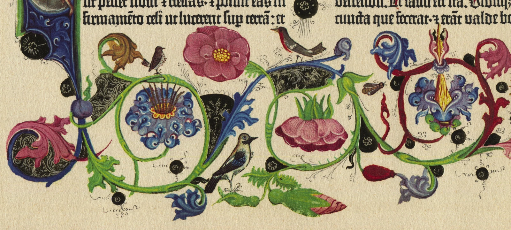
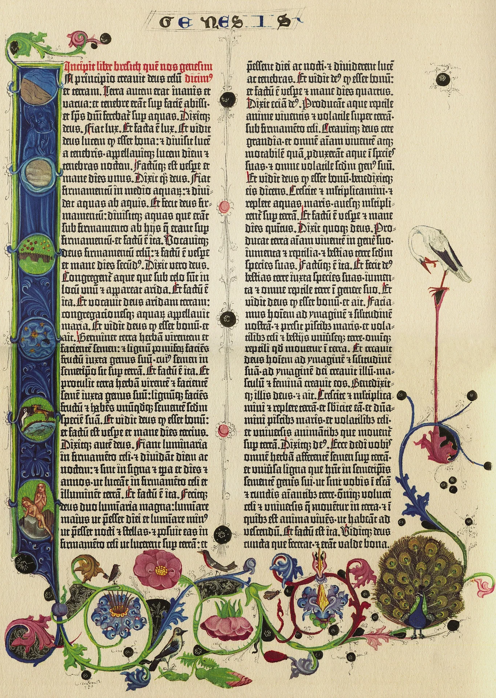
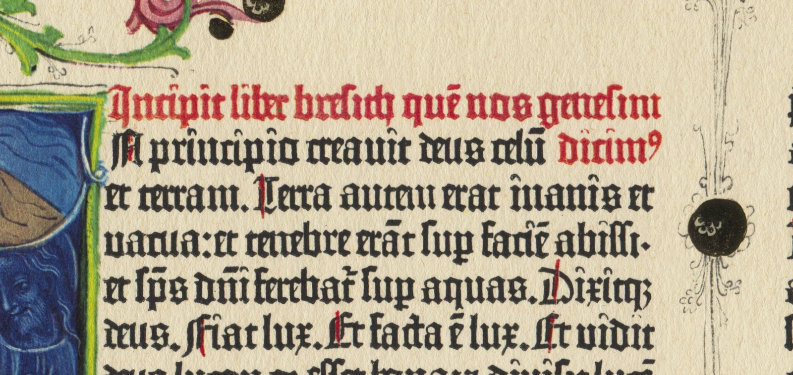
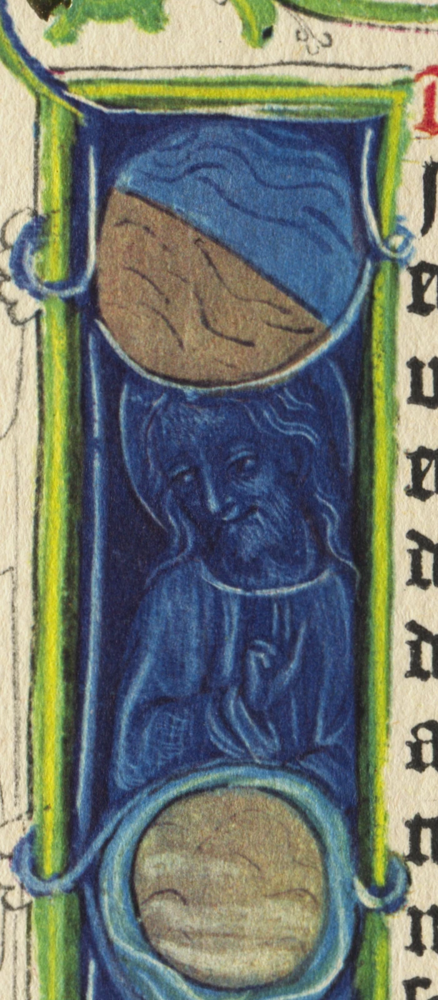

아직 펼치지 않은 카드모두의 말로 찍은 성경 · 2구텐베르크 성경 창세기 첫 쪽같은 인쇄소에서 찍은 구텐베르크 성경인데도 책마다 생김새가 달라요. 왜 그럴까요?찍은 글자 옆에 꽃이랑 공작새가 그려져 있어!
1455년 무렵마인츠에서 찍은 쪽 → 베를린 · 슈투트가르트의 두 도서관
구텐베르크 성경 창세기 첫 쪽
구텐베르크 성경(1450년대 독일 마인츠에서 요하네스 구텐베르크의 인쇄소가 금속 활자로 찍은 라틴어 성경)의 글자는 인쇄소에서 똑같이 찍었지만, 꽃과 새는 책마다 다른 손이 그렸어요. 베를린에 있는 책과 슈투트가르트에 있는 책의 창세기 첫 쪽을 겹쳐 놓고, 손잡이를 밀어 비교해 봐요.
글자는 도장처럼 똑같이 찍었는데, 그림은 사람마다 달리 그렸대. 두 책을 겹쳐서 무엇이 다른지 찾아볼까?
검수 전 시안이에요(기준서 1판). 꾸밈에 대한 설명은 도서관 자료를 따랐고, 그림 속 모습은 사진을 열어 본 대로 적었어요. 두 쪽을 겹쳐 보려고 이 안내서가 두 사진을 글자 칸에 맞춰 잘랐어요. 상상은 ‘눈 감고 상상해 보기’에만 썼어요.
시안 확인용카드 단계 미리 보기
1
찍은 글자, 손으로 핀 꽃
베를린 국립도서관에 있는 구텐베르크 성경의 창세기 첫 쪽이에요. 이렇게 한 도서관이 가진 한 부를 ‘베를린 본’처럼 ‘본’이라고 불러요. 검은 글자 두 단은 마인츠의 인쇄소에서 찍었어요. 이 쪽은 맨 처음 짠 쪽이라 붉은 제목 한 줄도 인쇄소가 붉은 먹으로 찍었지만, 머리글자(글 첫머리를 크게 꾸민 첫 글자)가 들어갈 자리는 비워 두었어요.
그 빈자리와 여백은 책이 인쇄소를 떠난 뒤 사람의 손이 채웠어요. 맨 위의 GENESIS(창세기의 라틴어 이름)는 손으로 써넣은 쪽 머리 제목이고, 붉은 글씨 한 줄은 여기서 창세기가 시작한다고 알리는 붉은 제목(루브릭)이에요. 왼쪽의 긴 I는 창세기 첫 낱말 ‘In(태초에)’의 첫 글자예요. 그 안에는 창세기 1장의 장면들을 작은 동그라미에 차례로 그렸어요. 아래 여백에는 꽃과 덩굴 사이로 새들과 공작이 있어요.
미국 뉴욕의 모건 도서관에 따르면 구텐베르크 성경 한 부(보통 두 권으로 묶어요)에는 붉은 제목이 들어갈 자리가 3,945곳, 크고 작은 머리글자가 들어갈 자리가 3,948곳(여섯 줄 높이 72곳부터 한 줄 높이 2,509곳까지) 있어요. 그 자리를 얼마나, 어떻게 채울지는 책마다 달랐어요.
글자는 도장처럼 찍고, 꽃이랑 공작은 사람이 붓으로 그렸대.
물어보기그림 속에서 새를 몇 마리 찾을 수 있어?
2
두 권을 겹쳐 보면
이번에는 슈투트가르트의 뷔르템베르크 주립 도서관에 있는 구텐베르크 성경의 같은 쪽이에요. 이 도서관이 1978년, 미국 뉴욕의 제너럴 신학교가 경매에 내놓은 것을 사들였어요.
두 쪽을 겹쳐 놓고 가운데 손잡이를 밀어 보세요. 검은 글자 줄은 거의 그대로 이어지는데(두 사진의 크기가 달라 조금 어긋나요), 머리글자와 여백은 전혀 달라요. 한 권에는 푸른 I와 공작이, 다른 권에는 초록 잎무늬 I와 엎드린 사슴 한 마리가 있어요.
가운데 손잡이를 밀어 두 권의 같은 쪽을 겹쳐 보세요.


왼쪽 · 슈투트가르트 본 — 이 안내서가 글자 칸에 맞춰 잘랐어요 · 자료: 구텐베르크 성경 창세기 첫 쪽(뷔르템베르크 주립 도서관 본) · 퍼블릭 도메인 · 위키미디어 공용
오른쪽 · 베를린 본 — 이 안내서가 글자 칸에 맞춰 잘랐어요 · 자료: 구텐베르크 성경 창세기 첫 쪽(베를린 국립도서관 본) · 스캔: Jossi · 퍼블릭 도메인 · 위키미디어 공용
두 사진은 촬영한 방법과 크기가 달라서, 이 안내서가 글자 칸에 맞춰 잘랐어요. 그래서 줄이 조금 어긋나 보일 수 있어요. 글자는 같은 활자로 찍었고, 꽃과 짐승은 저마다 다른 손이 그렸어요.
꾸미는 손은 책마다 달랐어요. 모건 도서관이 가진 세 권만 봐도, 한 권은 마인츠 근처의 독일 장인이 그리다가 그 뒤 벨기에 브뤼헤 근처의 장인이 이어서 그렸고, 다른 한 권은 펜으로 그린 머리글자와 붉고 푸른 글씨가 거의 전부예요. 프린스턴 대학의 한 권은 독일 에르푸르트에서 꾸미고 책으로 묶었어요. 인쇄소는 책을 묶지 않은 낱장으로 팔았거든요.
같은 글자인데, 한 권엔 공작이, 다른 권엔 사슴이 있어!
물어보기두 쪽에서 똑같은 것과 다른 것을 하나씩 찾아볼까?
눈 감고 상상해 보기
창가 작업대에 인쇄소에서 온 낱장이 놓여 있어요. 장식 장인이 붓 끝에 푸른 물감을 묻혀 긴 I자를 칠해요. 물감이 마르기를 기다리는 동안, 여백 한 귀퉁이에 공작의 꼬리 깃이 하나씩 피어나요.
눈을 감아 봐. 붓이 사각사각. 하얀 여백에 공작 꼬리 깃이 하나씩 피어나.
나의 자리
다시 보면, 이 동그라미 그림과 공작은 이 한 권에만 그려졌어요.
두 쪽을 겹쳐 보았을 때, 어느 쪽 손길에 더 오래 눈이 머물렀나요? 그 까닭은 무엇일까요?
공작이 있는 쪽과 사슴이 있는 쪽, 어느 쪽이 더 좋아? 왜?
마음에 닿는 한 줄을 고르거나 직접 써 보세요. 한 줄을 남기면 이 자리의 도장이 찍혀요. 이 기기에만 저장돼요.
더 깊이
이야기를 보다 궁금해질 만한 것들이에요. 답을 읽거나 짧은 영화로 보세요.

두 권의 붉은 줄이 똑같아요. 붉은 글씨도 찍은 거예요?

왼쪽의 긴 파란 기둥은 뭐예요? 동그라미마다 무슨 그림이에요?
뒷이야기
아직 펼치지 않은 이야기예요. 누르면 이야기가 펼쳐지고 색이 돌아와요. 더 알고 싶으면 근거를 따라가 보세요.
다 펼치면, 다음에 오실 때 새 이야기가 찾아와요.
오늘의 뒷이야기는 여기까지예요. 다음에 오시면 새 이야기가 기다리고 있어요.
펼친 뒷이야기 · 누르면 다시 볼 수 있어요
더 찾아보기
기록마다 다른 점
이디온 영인본이 나온 해 앞면 카드는 독일 뮌헨 이디온 출판사의 영인본을 1977~78년에 나왔다고 적었어요. 영인본 안내 사이트 팩시밀리 파인더는 베를린 본을 바탕으로 한 이 영인본을 1979년으로 적어요. 찍은 부수도 앞면은 955부, 팩시밀리 파인더는 895부로 달라요.
직접 가 보기
확인한 날 · 2026년 11월 18일 · 바뀌기 쉬운 정보라 정기적으로 다시 확인해요
베를린 국립도서관 운터 덴 린덴 건물(운터 덴 린덴 8)의 박물관 ‘슈타비 쿨투어베르크’에서는 베를린 본 구텐베르크 성경을 ‘살아 있는 책’이라는 멀티미디어 화면으로 넘겨 볼 수 있어요. 빛에 약한 전시물이 많아 석 달쯤마다 바뀐다고 해요. 관람 시간은 가기 전에 확인하세요.
두 권 겹쳐 보기 금박
두 권의 같은 쪽을 손잡이로 양쪽 끝까지 겹쳐 보면 카드에 금박이 입혀져요.
손잡이를 양쪽 끝까지 밀어 두 권 겹쳐 보기
아이와 함께 채색
아이와 함께 ‘영화처럼 보기’를 끝까지 보면 카드가 채색돼요.
아이와 함께 ‘영화처럼 보기’를 끝까지 보기
근거 보기 (15)
- 게이오 대학 디지털 컬렉션 「The 42-line Bible」 — 맨 처음 짠 1~5장과 129~132장은 한 단 40줄, 붉은 제목을 붉게 찍었다가 그만두고 42줄로
- GW 04201(전 세계 요람기 인쇄본 목록, 베를린 국립도서관) — 5장 앞면의 붉은 글씨 ‘Incipit liber bresith quē nos genesim’과 ‘dicim⁹’, 둘째 줄의 검은 글씨는 ‘N principio’부터(첫 글자 I는 찍지 않음)
- 폴 니덤, 「The Gutenberg Bible」(케임브리지 대학 도서관 전시 글) — 낱장은 붉은 제목·머리글자·쪽 머리 제목을 손으로 채우고 묶어야 했음, 돈을 더 내면 화려한 머리글자와 테두리, 대개 책을 판 곳에서
- 에런 프랫(2019), 해리 랜섬 센터(텍사스 대학) 블로그 「Gutenberg misbound」 — 인쇄소가 판 것은 낱장 묶음, 산 사람이 붉은 글씨 쓸 사람과 제본사를 구함
- 뉴욕 타임스(1978년 4월 8일) — 고서점 하우페 & 루츠의 경매 도록 소개 글에 실린 기사: 1978년 4월 7일 뉴욕 경매, 뷔르템베르크 주립 도서관이 사들임
- 올리버 둔체·팔크 아이저만(2011), 베를린 국립도서관 잡지 2011/3 — 창세기 첫 쪽(1권 5장 앞면)의 테두리는 나중에 그려 넣은 창조 이야기, 라이프치히의 ‘공작 공방’
- 구텐베르크 재단 상점(구텐베르크 박물관을 돕는 비영리 상점): 베를린 본 창세기 쪽 복제 — In principio의 I가 왼쪽 여백을 채우고 여섯 동그라미에 창조 이야기, 첫 세 동그라미 사이에 축복하는 창조주
- 성경 전시관(Bibelausstellung): 구텐베르크 성경 베를린 본 — 긴 글자는 첫 낱말 In의 I, 동그라미에 창조의 날들, 본문은 5장부터
- 모건 도서관 「Ornamentation」 — 인쇄소가 붉은 제목과 머리글자 자리를 남김, 붉은 제목 3,945개와 크기별 머리글자 수(72·3·61·11·1,292·2,509), 세 권의 서로 다른 꾸밈(마인츠 근처의 독일 장인과 브뤼헤 근처의 장인, 종이 책의 펜 머리글자), 푸스트의 장인과 정해진 무늬·스텐실
- 모건 도서관 「The Invention of Printing」 — 붉은 제목(루브릭)은 성경 각 부분의 시작과 끝을 알리는 붉은 글, 찍으려다 그만둠
- 유로피아나 블로그 「Europe’s First Printed Book」 — 헨드라이히(1630~1702)가 베를린 선제후 도서관에서 찾은 양피지 두 권, 1760년 욀리히의 본뜬 판, 지금도 베를린 국립도서관에, 책을 산 곳의 뜻대로 꾸밈
- 폴 니덤·에릭 화이트(프린스턴 2019 전시 · 옥스퍼드 Cabinet) — 셰이데 본은 에르푸르트에서 꾸미고 묶음
- 위키미디어 공용: 베를린 본 창세기 첫 쪽(1권 5장 앞면, 베를린 국립도서관의 꾸민 본), 슈투트가르트 본 창세기 첫 쪽(1978년 뉴욕 제너럴 신학교에서 사들임) 사진 정보
- 방문 베를린(visitBerlin): 슈타비 쿨투어베르크 — 운터 덴 린덴 8, 300점쯤의 전시, 베를린 본을 넘겨 보는 멀티미디어 ‘살아 있는 책’, 석 달쯤마다 바뀜(2026년 11월 18일 확인)
- 팩시밀리 파인더: 베를린 국립도서관 2° Inc 1511 — 이디온 출판사 영인본(뮌헨, 1979) 등
그림·사진·소리 출처
- 자료: 구텐베르크 성경 창세기 첫 쪽(베를린 국립도서관 본) · 스캔: Jossi · 퍼블릭 도메인 · 위키미디어 공용
- 자료: 구텐베르크 성경 창세기 첫 쪽(뷔르템베르크 주립 도서관 본) · 퍼블릭 도메인 · 위키미디어 공용
- 자료: 구텐베르크 성경 창세기 첫 쪽(베를린 국립도서관 본) · 스캔: Jossi · 퍼블릭 도메인 · 위키미디어 공용
- 자료: 구텐베르크 성경 창세기 첫 쪽(베를린 국립도서관 본) · 스캔: Jossi · 퍼블릭 도메인 · 위키미디어 공용
- 자료: 구텐베르크 성경 창세기 첫 쪽(베를린 국립도서관 본) · 스캔: Jossi · 퍼블릭 도메인 · 위키미디어 공용
- 자료: 구텐베르크 성경 창세기 첫 쪽(베를린 국립도서관 본) · 스캔: Jossi · 퍼블릭 도메인 · 위키미디어 공용
- 자료: 구텐베르크 성경 창세기 첫 쪽(베를린 국립도서관 본) · 스캔: Jossi · 퍼블릭 도메인 · 위키미디어 공용
- 자료: 구텐베르크 성경 창세기 첫 쪽(베를린 국립도서관 본) · 스캔: Jossi · 퍼블릭 도메인 · 위키미디어 공용
- 자료: 구텐베르크 성경 창세기 첫 쪽(베를린 국립도서관 본) · 스캔: Jossi · 퍼블릭 도메인 · 위키미디어 공용
- 자료: 구텐베르크 성경 창세기 첫 쪽(뷔르템베르크 주립 도서관 본) · 퍼블릭 도메인 · 위키미디어 공용
- 자료: 구텐베르크 성경 창세기 첫 쪽(베를린 국립도서관 본) · 스캔: Jossi · 퍼블릭 도메인 · 위키미디어 공용
- 자료: 구텐베르크 성경 창세기 첫 쪽(베를린 국립도서관 본) · 스캔: Jossi · 퍼블릭 도메인 · 위키미디어 공용
‘처음 만나는 기독교 문화’의 깊은 카드예요. 카드 단계와 남긴 글은 이 기기에만 저장돼요.